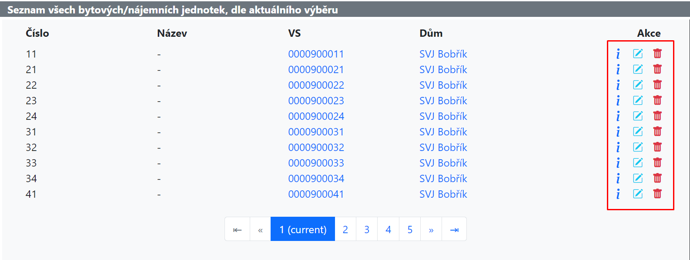
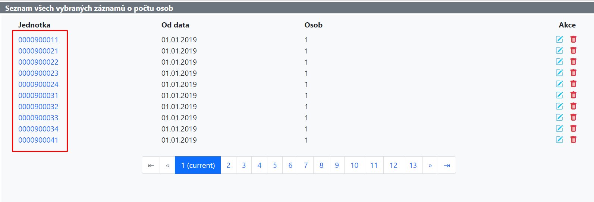

Inline Menu Items
An inline menu is a colection of links, typically renered as icon buttons. These can be found in pretty much every listing page throughout the application.
As of the time of writing this (September 2024), the inline_menu_item.py defines the following three template tags:
inline_menu_icon- Links rendered as icons
inline_menu_item- Links rendered as normal links. Deprecated
inline_menu_item_new- A replacement of the deprecated
inline_menu_item
Inline Menu Icon
The most widely used tag for inline menu items. The link is rendered as an icon for a better UX experience.
Every object, with exceptions of course, has a detail, update and delete views associated with them. For that reason there are usually three icons (inline menu items) for each object in a listing page (as can be observed on the image below).

The only mandatory parameters are the url_address and icon_type.
url_address-
A reversible view name.
As the function accepts kwargs, query parameters can be passed in as regular kwargs (i.e.
query_param=value).As for path parameters, they just need a prefix of
get_(i.e.get_path_param=value). icon_type- The type of icon to render. Right now, there is no way to define a custom icon while defining the menu item, only the icons in the following table are supported. If an unsupported icon is passed in, the default icon is rendered instead.
| Icon Name | Bootstrap Icon Class | Color | Label |
|---|---|---|---|
| detail | bi bi-info-lg |
DEFAULT_APPLICATION_BUTTONS_LINKS_CONFIGURATION['link_color_normal'] |
Detail |
| create | bi bi-folder-plus |
DEFAULT_APPLICATION_BUTTONS_LINKS_CONFIGURATION['link_color_success'] |
Vytvořit |
| update | bi bi-pencil-square |
text-info |
Upravit |
| delete | bi bi-trash-fill |
DEFAULT_APPLICATION_BUTTONS_LINKS_CONFIGURATION['link_color_danger'] |
Vymazat |
| disconnect | bi bi-ban |
DEFAULT_APPLICATION_BUTTONS_LINKS_CONFIGURATION['link_color_danger'] |
Odpojit |
| copy | bi bi-journals |
text-warning |
Kopírovat |
| paste | bi bi-clipboard2-check-fill |
DEFAULT_APPLICATION_BUTTONS_LINKS_CONFIGURATION['link_color_success'] |
Vložit |
| activate | bi bi-play-circle-fill |
DEFAULT_APPLICATION_BUTTONS_LINKS_CONFIGURATION['link_color_success'] |
Aktivovat |
| connect | bi bi-paperclip |
DEFAULT_APPLICATION_BUTTONS_LINKS_CONFIGURATION['link_color_success'] |
Připojit |
| range | bi bi-arrows-expand-vertical |
DEFAULT_APPLICATION_BUTTONS_LINKS_CONFIGURATION['link_color_success'] |
Rozsah |
| default | bi bi-question-circle-fill |
DEFAULT_APPLICATION_BUTTONS_LINKS_CONFIGURATION['link_color_danger'] |
Invalid icon |
| add | bi bi-plus-circle |
DEFAULT_APPLICATION_BUTTONS_LINKS_CONFIGURATION['link_color_normal'] |
Přidat |
| configuration | bi bi-gear |
DEFAULT_APPLICATION_BUTTONS_LINKS_CONFIGURATION['link_color_success'] |
Konfigurace |
| competency | bi bi-key |
DEFAULT_APPLICATION_BUTTONS_LINKS_CONFIGURATION['link_color_danger'] |
Oprávnění |
tooltip- An optional tooltip that is shown when the user hovers over the icon. If no tooltip is defined, the label from the table above is used as the tooltip.
# Blue update icon (bi bi-pencil-square) with the link /accounts/createconfiguration/?user_id=16
{% inline_menu_icon 'update' 'accounts:account-configuration-create' user_id=requested_user.pk %}
# Blue update icon (bi bi-pencil-square) with the link /accounts/editprofile/16/
{% inline_menu_icon 'update' 'accounts:account-edit-profile' get_pk=requested_user.pk %}
# Dark blue detail icon (bi bi-info-lg) with the link /najemnijednotky/bytydetail/1/
{% inline_menu_icon 'detail' 'byty:najemnici-detail' get_pk=each.id %}
# Blue update icon (bi bi-pencil-square) with the link /najemnijednotky/bytyupdate/1/?sourcecaller=L&referraldumid=1
{% inline_menu_icon 'update' 'byty:najemnici-update' get_pk=each.id sourcecaller='L' referraldumid=referral_dum.pk %}
# Red delete icon (bi bi-trash-fill) with the link /najemnijednotky/bytydelete/1/?sourcecaller=L&referraldumid=1
{% inline_menu_icon 'delete' 'byty:najemnici-delete' 'Odpojit' get_pk=each.id sourcecaller='L' referraldumid=referral_dum.pk %}
Inline Menu Item
Inline menu items differ from their icon counterpart only in the way they are presented to the user, not as icons but as regular links (as can be seen on the image below).

The only mandatory parameters are the link_text and url_address.
link_text- The label of the link.
url_address-
A reversible view name.
As the function accepts kwargs, query parameters can be passed in as regular kwargs (i.e.
query_param=value).As for path parameters, they just need a prefix of
get_(i.e.get_path_param=value). style-
An optional list of classes.
Might be replaced for a
StyleModifierin the future.
# Link with the label depending on the value of "each.byt_id.variabilni" and link /najemnijednotky/pocetosoblist/?referralbytid=1
{% inline_menu_item_new each.byt_id.variabilni 'byty:pocetosob-listing' referralbytid=each.byt_id.pk %}
# Link with the label depending on the value of "each.sluzba.just_name" and link /sluzby/sluzbydefinicedetail/2/
{% inline_menu_item_new each.sluzba.just_name 'sluzby:sluzbydefinice-detail' get_pk=each.sluzba.pk %}